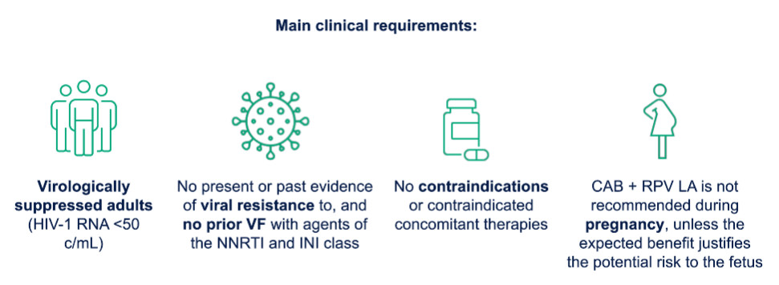
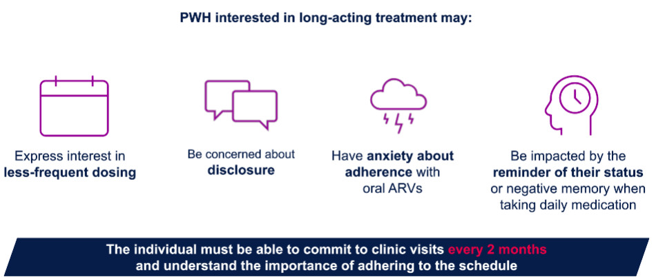
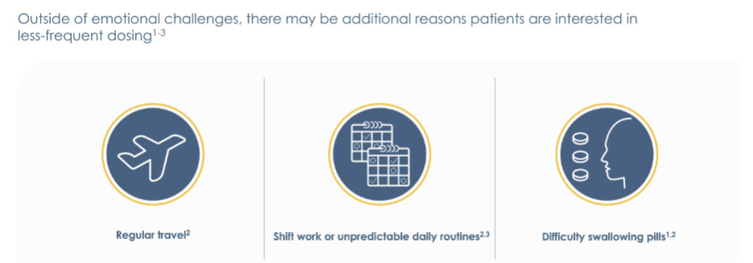

HIV長效針劑¶
CDC申請條件¶
（一）18歲以上成人。
（二）近6個月內HIV病毒量<50 copies/mL。
（三）每日口服藥物有困難者，並請敘明理由，如：
1. 吞嚥藥物有困難。
2. 有生理或心理等疾病，不適合每日服藥。
3. 口服藥物產生副作用（如：暈眩、嘔吐等）。
4. 其他
（四）同意配合進行2個月一次的注射。
（五）未感染B型肝炎病毒。
（六）過去無病毒抑制失敗、未對CAB或RPV具有已知或疑似抗藥性。
（七）未使用會與CAB或RPV有明顯藥物交互作用之藥物。
（八）女性未懷孕或未有備孕計畫。
（九）潛伏結核感染（LTBI）檢驗為陰性，或已完成TB/LTBI治療。



General criteria¶
To be eligible for cabotegravir-rilpivirine, patients should:
- Be virologically suppressed and adherent to a stable oral regimen for at least 6 to 12 months. The majority of data evaluating cabotegravir-rilpivirine comes from persons with stable viral suppression prior to switching to long-acting injectables, as described above. (See 'Reasons for switching ART' above.)
- Have no documented or suspected resistance mutations that affect activity of cabotegravir or rilpivirine; reasons to suspect such resistance include imperfect adherence or virologic failure while taking a non-nucleoside reverse transcriptase inhibitor (NNRTI) or an integrase strand transfer inhibitor (INSTI) in the past. In some studies, baseline rilpivirine proviral resistance mutations were a significant predictor of virologic failure with cabotegravir-rilpivirine.
- Ideally, patients should have no history of virologic failure (even with NNRTI/INSTI regimens). However, certain acquired resistance mutations may be acceptable if there are no other good treatment options. Trials generally excluded individuals with any history of virologic failure; the only resistance mutation typically permitted for enrollment in the trials was a K103N mutation (the NNRTI mutation associated with resistance to efavirenz, which may be acquired at time of HIV acquisition).
- Be able and willing to adhere to clinic visits for IM injections. The injections must be administered by a health care professional; they are not approved for at-home use or self-administration.
- Two-drug regimens, including long-acting injectable therapy, should generally be avoided in patients with chronic hepatitis B virus (HBV) infection, as such patients should receive a tenofovir-containing ART regimen whenever possible. (See "Treatment of chronic hepatitis B in patients with HIV".)
Additional considerations¶
When determining if cabotegravir-rilpivirine is a suitable regimen for a patient, we also assess the following factors:
Drug-drug interactions¶
There are a few drug-drug interactions that are contraindications to parenteral cabotegravir-rilpivirine. These include rifamycins (rifampin, rifabutin, rifapentine), certain anticonvulsants (carbamazepine, oxcarbazepine, phenobarbital, phenytoin), St. John's wort, and dexamethasone (if more than a single dose).
IM cabotegravir-rilpivirine should also be used with caution with drugs known to cause prolonged QT or Torsade de Pointes or in patients with a history of these conditions.
Cabotegravir may lead to decreased levels of methadone. Although use of methadone is not a contraindication to IM cabotegravir-rilpivirine, clinical monitoring is recommended and patients may need adjustment of their methadone dose if withdrawal symptoms occur.
In persons with mpox, initiation of long-acting cabotegravir-rilpivirine should be avoided during tecovirimat therapy and for two weeks after the conclusion of tecovirimat.
Buttock implants/fillers¶
For patients with buttock implants or fillers, the injections may not be an option. The medications are approved only for administration in the gluteal region. Data for injections in the vastus lateralis are anticipated in the future.
HIV subtype¶
In some studies, there was a higher likelihood of virologic failure in patients with HIV subtype A1 or A6 virus (which most often occurs in Eastern Europe and Central Asia and which has been associated with certain integrase gene polymorphisms). In general, this finding doesn't impact our decision to initiate cabotegravir-rilpivirine since virologic failures were rare in the trials (13 out of 1039 participants) and viral subtypes are usually not known. However, we would discuss the possible increased risk of virologic failure if it is known that a patient has subtype A virus or comes from a region with predominance of subtype A virus (see "Global epidemiology of HIV infection"). Viral subtype may not be known though sometimes is reported as part of a genotype resistance assay so a clinician may be able to confirm this information by reviewing past resistance assay results.
Body mass index¶
In one study, body mass index (BMI) above 30 kg/m2 was associated with an increased risk of virologic failure. However, the association of high BMI and virologic failure has not been reproduced. With elevated BMI, we do generally opt for a longer needle for injections and pay extra attention to site of administration. (See 'Dosing and administration' below.)